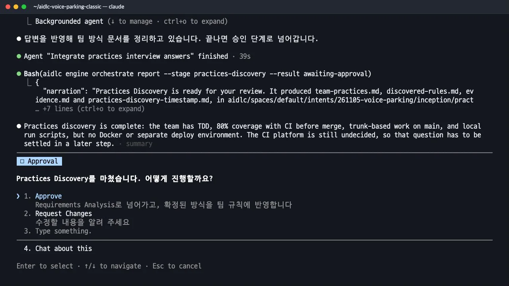
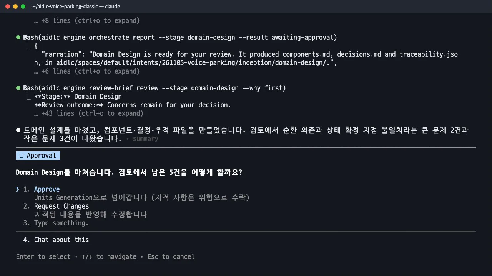
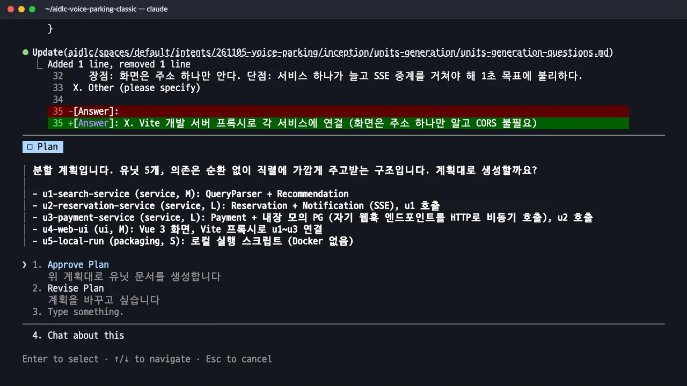
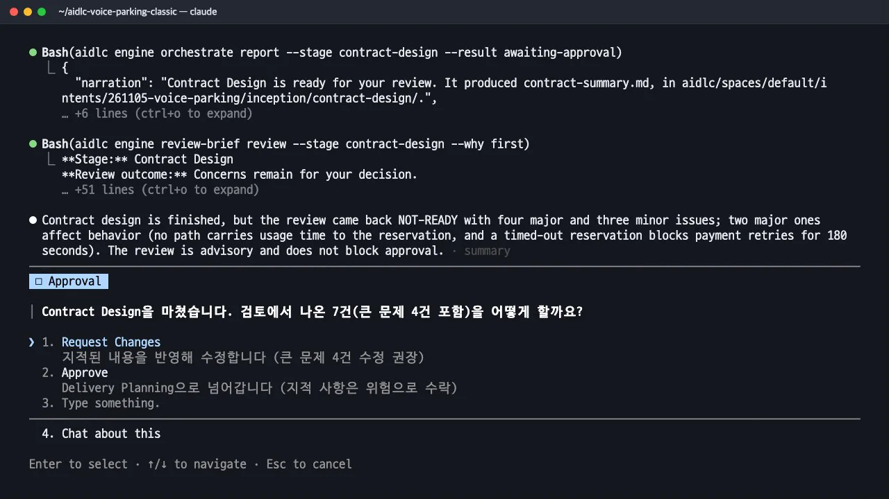
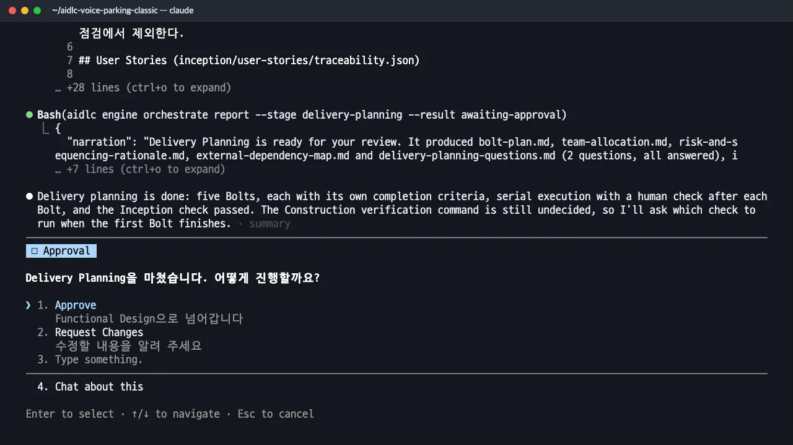

레벨 1과 같은 요청을
classic스코프로 다시 시작합니다. 팀 규칙(constitution)에 TDD를 정하고, 요구사항 → 유저 스토리(Given/When/Then) → 화면 → 도메인 설계(ADR) → 유닛 DAG → API 계약 → 볼트 계획까지, 산출물이 어떻게 이어지고 누가 승인하는지 봅니다.
이 장은 영상 세 편에 걸쳐 있습니다. 위 영상은 2-2(유저 스토리·화면·도메인 설계)이고, 2-1 팀 규칙과 요구사항 (3:59), 2-3 유닛·계약·볼트 계획 (3:16)이 앞뒤를 맡습니다.
무엇을 · 왜#
레벨 1에서는 코드 생성 계획서 하나에 아키텍처가 함께 들어갔습니다. 레벨 2에서는 같은 결정을 스테이지별 문서로 정리합니다. 각 문서는 검토 에이전트가 읽고 사람이 승인합니다. 산출물은 모두 aidlc/spaces/default/intents/261105-voice-parking/inception/ 아래에서 스테이지 이름별 폴더에 쌓입니다. 개념과 스펙킷 대응은 개념과 스펙킷 비교에 정리했습니다.
따라 하기#
- 새 폴더에서 classic으로 시작. 레벨 1과 같은 방법으로 새 폴더를 만들고
aidlc config --harness claude로 연결한 뒤, 같은 요청에서 스코프와 깊이만 바꿉니다.--depth minimal은 문서에 핵심만 짧게 담도록 합니다.계획에는 17개 스테이지(초기화 3, Inception 8, Construction 6. 역설계는 새 프로젝트라 건너뜀)가 잡히고, 유닛이 정해지면 Construction의 설계·코드 스테이지가 유닛마다 반복됩니다./aidlc classic --depth minimal 사용자가 음성 텍스트('강남역 근처 2시간 주차권 찾아줘')를 보내면 …(레벨 1과 같은 요청) - 팀 규칙 (2.2 Practices Discovery, 스펙킷의 constitution). 첫 스테이지에서는 팀이 일하는 방식을 묻습니다. 답한 내용은 다음과 같습니다.
| 질문 | 답 |
|---|---|
| 얇은 end-to-end 조각(워킹 스켈레톤)을 먼저 만들까요? | 아니오, 서비스별로 완성 |
| 테스트는 어떤 방식으로? | TDD (테스트 먼저) |
| 브랜치와 배포는? | trunk(main), 로컬 실행 스크립트로만 실행, Docker 없음 |
| 코드 스타일과 린터는? | Vue는 ESLint+Prettier, Java는 IDE 기본 |
승인하면 이 내용이
aidlc/spaces/default/memory/team.md로 저장됩니다. classic 스코프가 정한 최소 기준(커버리지 80%, 병합 전 CI)은 낮출 수 없어 그대로 적용되었습니다.## Testing Posture - **Methodology**: tdd - **Ordering**: 각 계층마다 실패하는 테스트를 먼저 작성한 뒤 그 테스트를 통과시키는 구현을 작성한다. - `classic` 범위의 하한을 유지한다: 80% 라인 커버리지.
팀 규칙 질문과 승인 - 요구사항 (2.3, 스펙킷의 specify). PO가 답할 질문이 나옵니다. 레벨 1에서 정한 내용(종합 점수 40/40/20, 모의 결제, 비동기 웹훅과 1초, 180초 자동 취소, 로그인 없음)을 처음부터 직접 적었고, 후속 질문 3개(시간 적합도 점수, 화면 전달 방식 SSE, 180초를 세는 시점)가 이어졌습니다. 검토 에이전트가 큰 문제 3건, 작은 문제 3건을 짚은 뒤 승인했습니다.
- 유저 스토리 (2.4). 페르소나는 운전자 한 명으로 정하고, 스토리는 사용자 흐름에 따라 나눴습니다. 결제 실패 시에는 같은 목록에서 다른 후보로 다시 결제하게 했습니다.
stories.md에 스토리 9개가 생겼고, 인수 조건은 단계 규칙(phases/inception.md)대로 Given/When/Then 형식으로 작성되고AC<그룹>.<순번>.<조건>번호가 붙었습니다.## US4.1 결제 승인 직후 예약 완료 보기 As a 운전자, I want to 결제가 승인되면 곧바로 화면에서 예약 완료를 보고, so that 예약이 확정됐다고 안심할 수 있다. - AC4.1.1 Given 예약이 결제 대기이고 화면이 서버 푸시(SSE)로 연결돼 있을 때, When 모의 PG의 승인 웹훅이 오면, Then 웹훅 수신 시각부터 1초 이내에 화면에 예약 완료(주차장, 이용 시간, 결제 금액)가 표시된다. - AC4.1.2 Given 같은 승인 웹훅이 3번 도착해도, When 처리하면, Then 예약 확정은 정확히 1회이다. - AC4.1.5 Given 이미 자동 취소된 예약에 승인 웹훅이 늦게 오면, When 처리하면, Then 예약은 되살아나지 않고 무시된 사실이 기록된다. - 화면 (2.5 Refined Mockups). 입력 방식(텍스트 입력창), 화면 부품 라이브러리(없음, 직접 CSS), 접근성(데스크톱 기본)을 답했습니다.
mockups.md에 화면 상태 8가지(S1 입력 대기 ~ S8 자동 취소)가 스토리 번호와 함께 정리되고, 상호작용 규칙·접근성 체크리스트가 따로 생겼습니다. - 도메인 설계 (2.6, 스펙킷 plan의 아키텍처). 아키텍트 에이전트가 논리 컴포넌트를 몇 개로 나눌지 장단점과 함께 묻습니다. 5개 안(QueryParser, Recommendation, Reservation, Payment, Notification)을 골랐고,
components.md와 ADR 5개가 담긴decisions.md가 생겼습니다. ADR은 단계 규칙대로 Context / Decision / Consequences / Alternatives Rejected 네 항목으로 구성됩니다. 검토 에이전트가 큰 문제 2건을 찾았습니다. 알림이 예약을 조회하면 순환 의존이 생긴다는 점, 예약 상태를 누가 확정하는지가 ADR마다 다르다는 점입니다. 아키텍트로서 Request Changes를 고르고 두 문제의 수정안을 선택했습니다. 수정본에서는 호출이 Payment → Reservation → Notification 한 방향으로만 흐르고, 상태는 Reservation의 원자 연산 하나로 확정됩니다.## ADR-003: 호출 방향을 Payment에서 Reservation으로 둔다 - Decision: Payment가 Reservation을 호출한다. Reservation은 Payment를 호출하지 않는다. Reservation은 Notification에 상태 스냅샷을 이벤트로 밀어 넣고 Notification은 Reservation을 호출하지 않는다. - Consequences: 의존 그래프가 순환 없이 단방향이다. … - Alternatives Rejected: Reservation이 Payment를 호출하는 방식은 결과 반영에서 순환이 생겨 선택하지 않았다.
도메인 설계 검토와 수정 요청 - 유닛 분해 (2.7). 컴포넌트를 구현·배포할 단위로 묶습니다. 서비스는 3개(search = QueryParser+Recommendation, reservation = Reservation+Notification, payment = Payment)로 나누도록 답했습니다. 모의 PG는 payment 안에 두되, 승인 결과는 자신의 웹훅을 HTTP로 비동기 호출해 전달하도록 했습니다. 화면은 Vite 프록시로 연결하도록 했습니다. AI-DLC가 분할 계획(유닛 5개, 종류와 크기)을 먼저 보여 주고 승인을 받은 뒤 문서를 씁니다.
| 유닛 | 종류 | 내용 |
|---|---|---|
| u1-search-service | service, M | 입력 해석, 후보·종합 점수 |
| u2-reservation-service | service, L | 예약 상태, 180초 취소, SSE |
| u3-payment-service | service, L | 결제, 내장 모의 PG(자기 웹훅 HTTP) |
| u4-web-ui | ui, M | Vue 3 화면 |
| u5-local-run | packaging, S | 로컬 실행 스크립트 |
unit-of-work-dependency.md에는 의존 DAG가 mermaid로 그려집니다(u2→u1, u3→u2, u4→u1·u2·u3, u5→전부, 순환 없음).unit-of-work-story-map.md는 스토리와 유닛을 연결합니다.
유닛 분할 계획 - API 계약 (2.8, 스펙킷 plan의 contracts). 세션 전달(
X-Session-Id헤더), 웹훅 위변조 방지(HMAC 서명 + 이벤트 ID), 호출 실패 때의 재시도(2초 제한, 되돌릴 수 있는 호출만 재시도)를 답했습니다.contract-summary.md에 계약 6개(C1~C6)와 오류·제한 시간·재시도 표가 생겼습니다. 검토 결과는 NOT-READY(큰 문제 4건)였습니다. 이용 시간 값이 어느 계약에도 포함되지 않고, 예약 생성이 시간 초과되면 재결제가 180초 막히며, 브라우저EventSource는 사용자 지정 헤더를 보낼 수 없고, 웹훅 반영 실패 시 응답과eventId기록 시점이 없다는 지적입니다. 검토는 진행을 막지 않고 문제를 알리기만 하므로, 고칠지는 사람이 정합니다. 4건을 고치도록 요청했고 재검토에서 모두 해결된 것을 확인했습니다.
계약 검토: NOT-READY - 볼트 계획 (2.9, 스펙킷의 tasks). 볼트 크기는 유닛마다 하나(5개), 가장 우려되는 점은 "승인 후 1초 안 화면 표시"로 답했습니다.
bolt-plan.md에 볼트마다 완료 기준(Definition of Done), 확인할 가설, 보여 줄 결과가 적힙니다. 핵심은 완료 기준을 유저 스토리의 인수 조건 번호와 계약 시험으로 명시한다는 점입니다. 스펙이 그대로 시험의 기준이 됩니다.전체를 확인하는 검증 명령(Construction Verification Command)은 아직 실행할 코드가 없어 첫 볼트를 마칠 때 사람에게 묻기로 했습니다.## B2 u2-reservation-service - Definition of Done: AC3.1.3, AC4.1.1(서버 측 시간 측정), AC4.1.4, AC4.1.5, AC4.2.1~AC4.2.4가 시험으로 통과하고, C3, C5 계약 시험과 `applyPaymentResult` 경합 시험이 통과한다. 80% 라인 커버리지. - Confidence hypothesis: 결제 결과 반영과 180초 자동 취소가 같은 순간 겹쳐도 하나만 확정되고, 승인 후 서버 안에서 SSE 푸시가 150ms 안에 나간다.
볼트 계획 승인
이 장에서 사람이 한 일#
| 스테이지 | 답한 사람(역할) | 고친 것 |
|---|---|---|
| 팀 규칙 | 팀 리드 | TDD, 로컬 실행 |
| 요구사항·스토리 | PO | 점수 규칙, 웹훅·1초·180초, 실패 시 재선택 |
| 화면 | 디자이너·PO | 입력 방식, 접근성 범위 |
| 도메인 설계 | 아키텍트 | 순환 의존·확정 지점 수정 요청 |
| 유닛·계약 | 아키텍트·개발 리드 | 서비스 묶음, 모의 PG 위치, 계약 큰 문제 4건 수정 요청 |
| 볼트 계획 | 개발 리드 | 볼트 크기, 먼저 확인할 걱정거리 |
확인 문제#
레벨 1에는 없던 "유닛"이 생기면 무엇이 달라지나요?
구현이 유닛 단위로 나뉩니다. 유닛마다 기능 설계·NFR·인프라 설계를 거쳐 코드를 만들고, 의존 DAG 순서대로 하나씩 끝냅니다. 팀이 유닛을 나눠 맡을 수도 있습니다(구현 시작 때 "Who builds"에서 Several teams).
검토 에이전트가 NOT-READY라고 하면 진행이 막히나요?
막히지 않습니다. classic의 검토는 알려 주는 역할(advisory)이라 Approve를 고르면 지적된 문제는 사람이 인지하고 수용한 위험으로 남습니다. 이번에는 실제 동작에 영향을 주는 큰 문제라 Request Changes로 고쳤습니다.